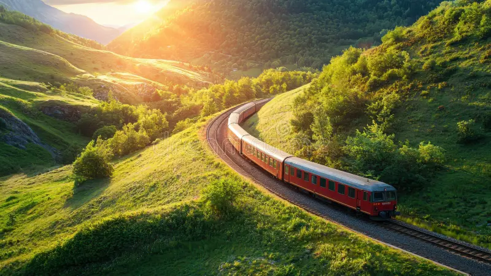
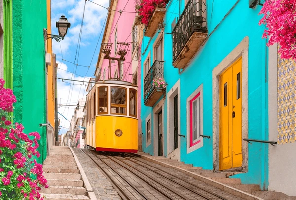
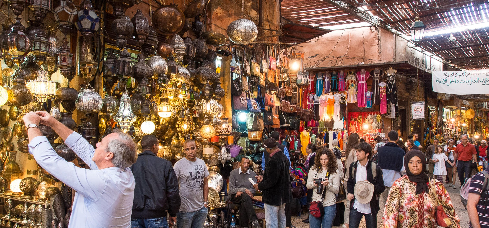

- The Departure
- The First City
- A child offering a flower at a tram stop.
- A strangers laughter echoing through a narrow alley.
- The quiet satisfaction of finding your way back without a map.
- Lessons from The Road
- The sound of waves beneath a midnight ferry.
- The warmth of a shared meal when languages failed
- The comfort of realizing the world is kinder than you feared
- The Return
- Reflections for the Next Journey
- Embrace the unknown: The best parts of travel are often unplanned.
- Connect with locals: They are the true keepers of a places soul.
- Travel light: Both in luggage and in expectations.
- Be present: The journey is as important as the destination.
The train hissed like a tired dragon as it pulled out of the small-town station. I pressed my forehead against the glass, watching the familiar rooftops fade into mist.
I wasnt running away — not exactly. I was simply chasing something unnamed: the kind of silence that exists between foreign words, the kind of calm that comes when you are lost but not afraid.

I arrived in Lisboa, a city made of sun and music. The streets tilted and turned like the thoughts in my head — uncertain, but beautiful.
Every corner smelled of coffee and sea salt, every wall hummed with the strum of a distant guitar.
I learned quickly that travel isnt about destinations; its about moments that arrive without warning:

Days turned into weeks, and I carried less each day. By the third country, I had stopped buying souvenirs — the real treasures were the things I couldnt pack:
In Marrakesh, I lost my journal in a spice market. At first, I panicked — then I laughed. Maybe stories were meant to be scattered, like cumin dust in the wind.

When I finally came home, the town hadnt changed — but I had. My suitcase was half-empty, my heart half-full.
Travel had taught me something the maps never said: the shortest road is the one that leads you back to yourself.